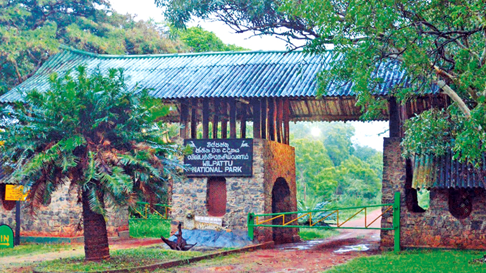

Introduction
Wilpattu National Park is Sri Lanka's largest national park located close to Puttalam. Wilpattu was designated as a wildlife sanctuary in 1990 and covers approximately 1,317 km2 (square kilometers) of ground area. Wilpattu consists of 215 species of birds out of which 7 species are endemic to Sri Lanka. It has 44 species of mammals and has one of the highest densities of leopards in the world. Two important pilgrimage sites namely, Kudrimalai point and veli Vehera are located within the Wilpattu National Park.
The best time to visit the Wilpattu National Park is in the dry season from February to June when a wide variety of animals can be spotted. As water levels are lower during this season, it's easier to vitness the animals coming out to the lagoons to drink water and hydrate themselves.
